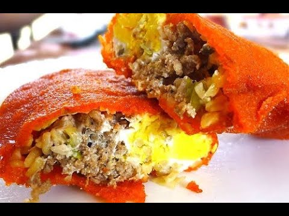

Home
Ilocos Empanada
Original by: Jennifer Segal

What is this dish?
Another small bit from our trustworthy friend, ChatGPT: the Ilocos empanada, a popular street food from the Ilocos region in the Philippines, traces its roots to Spanish colonization when the concept of empanadas was introduced. Over time, the Ilocanos created a unique version using rice flour for the dough, giving it a distinctive orange hue from annatto seeds. The filling typically includes grated green papaya, mung beans, local longganisa (sausage), and sometimes egg. Deep-fried to achieve a crispy exterior, these empanadas are a staple of local street food, especially in Vigan and Laoag, and are celebrated in local festivals. Variations like the larger Batac empanada and the thinner-crusted Vigan empanada highlight regional preferences.
Ingredients (8 servings)
- 2 cups of rice flour
- 1/2 cup of water
- 1/2 teaspoon of salt
- 1/4 cup of annatto oil
- 1 cup of ground pork (Filipino longganisa for authenticity)
- 1 cup of grated green papaya
- 1/2 cup of grated carrots
- 1/2 cup of chopped green onions
- 1/4 cup of minced garlic
- Desired amount of salt and pepper
- Needed amount of vegetable oil for frying
- Desired amountof spicy vinegar
- 4 pieces of eggs
Steps #
- Combine rice flour, salt, water, and annatto oil in a mixing bowl
- Knead the mixture until dough is smooth and pliable
- Divide the dough into small balls, and flatten them into thin, round wrappers
- Mix the meat, grated papaya, grated carrots, chopped green onions, minced garlic, salt and pepper into a different bowl to make our filling
- Place a spoonful of the filling in the center of each rice flour wrapper
- Crack and place an egg in the center of the filling
- Fold the wrapper in half, sealing the edges by pressing them together. Use water to help seal the edges if needed
- Make sure the empanadas are tightly sealed to prevent any filling form leaking out during frying
- Heat the vegetable oil in a deep frying pan or pot
- Place the empanada in the oil once it is hot
- Fry until they turn crispy (usually around 5-7 minutes)
- Remove the empanadas from the oil and drain on paper towels to remove excess oil. Be careful as the empanadas may stick to the paper towels as it cools off
- Serve hot with spicy vinegar
Back to top